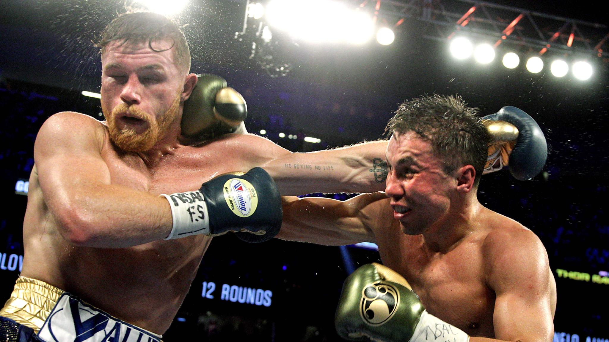

Et år efter deres første kamp som endte uafgjort, var deres anden kampen næsten ligeså tæt. Der var ingen tælling i denne kamp, men kampen var vild og i fuld tempo til enden, foran en overvældede tilskuere i T-Mobile Arena.
To af dommerne havde Alvarez som vinder med dommerstemmer der lød 115-113, mens den tredje havde den til 114-114.
De to kæmpere skiftede roller I denne kamp, hvor Golovkin var mere en kontra fighter, mens Canelo gik frem det meste af kampen.
Begge landede gode slag og Golovkin styret nogle runder med hans jab, dog var ingen af dem i fare for at gå ned på tælling under kampen
Kampen er en omkamp efter deres uafgjort kamp fra sidste september, som efterlog begge kæmpere utilfredse. Denne gang var det Golovkin som var utilfreds og endte med han stormede ud af ringen uden at sige noget.

Ringsidens slags statistik viste en meget tæt kamp, dog havde de Golovkin som vinder med en lille del. Golovkin ramte 234 slag ud af 879, mens Canelo landede 203 ud af 622.
Omgående var der tale om en tredje kamp mellem disse to krigere, som nu kender hinanden ret godt.
Begge kæmpere er villig til at have endnu en kamp en gang i fremtiden under rette betingelser.